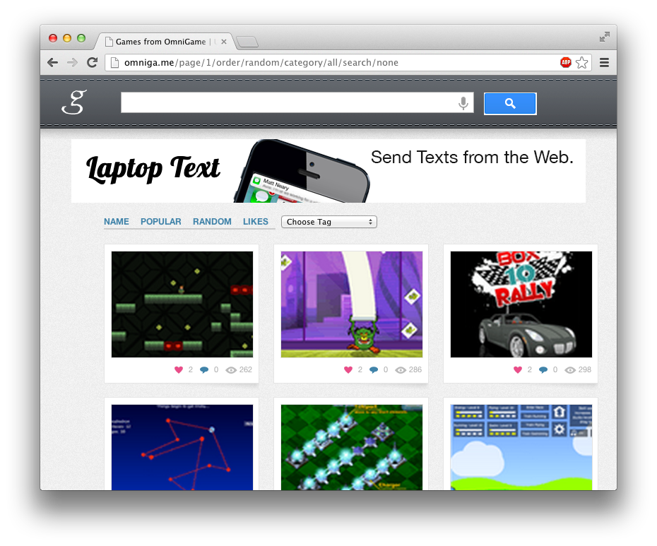
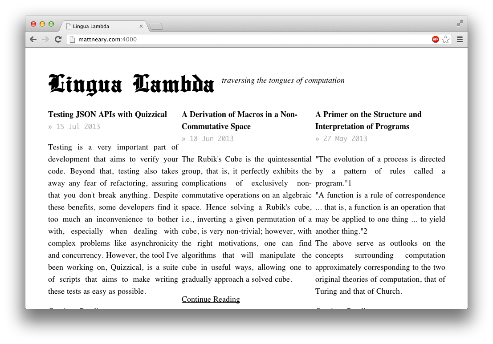
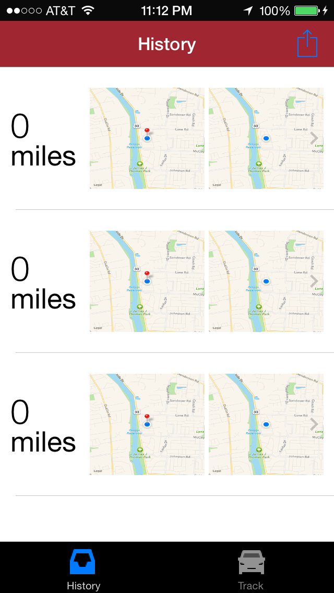
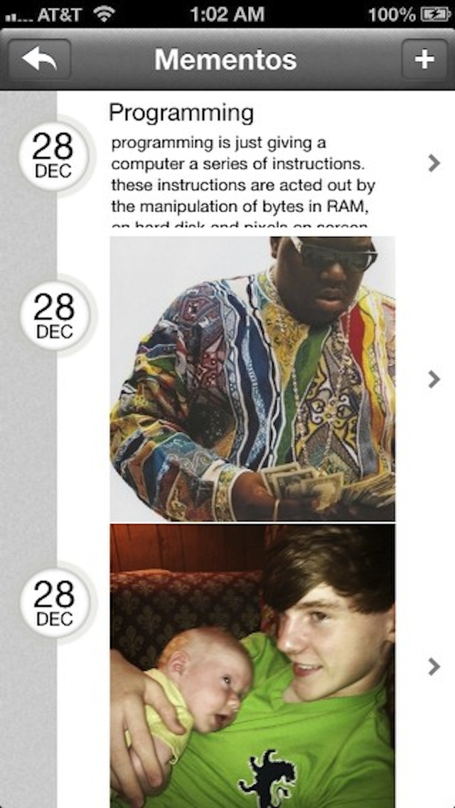
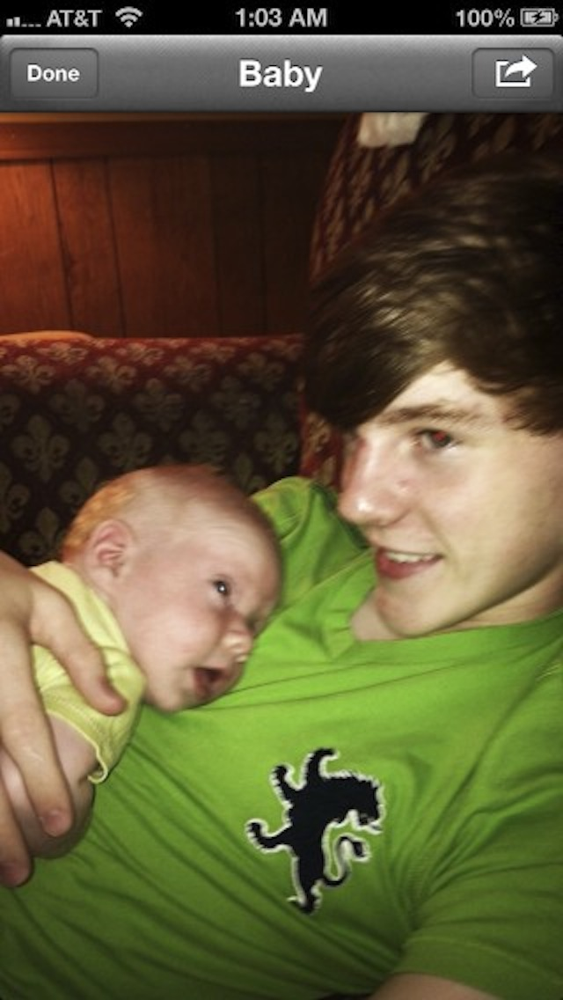
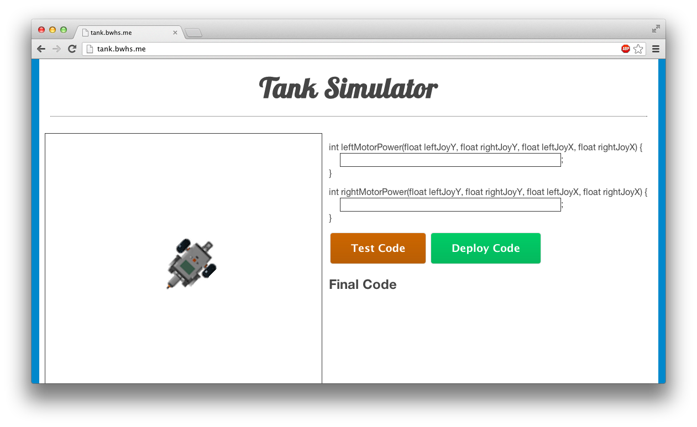

Matt Neary
iOS, Full-Stack Web Developer, and Functional Programmer
I am a full-stack web developer, iOS app developer, and Functional Programmer.
I like JavaScript and Ruby for web development, Haskell for interpreters, and Lisp as a scripting language.
I am the sole-proprieter of Lambda Labs; under this brand I have helped to make websites garnering tens of thousands of daily views, apps with thousands of users, and spun out various businesses.
My articles are displayed at Lingua Lambda, with a similar book titled "Tarpits & Abstraction" in the works. I have created many writing, testing & algorithmic tools, which are available open-source.
Lampas - A Lisp
Lampas is a Lisp implementation in Haskell with continuations, syntactic sugar, and macros.
TeXode
TeXode makes typesetting easy, making use of Markdown as a source and outputting fully typeset books.
Turing, LetterEleven, & mpota
Interpreters of the Lambda Calculus and Turing rulesets, and a bootstrapped Lambda Calculus interpreter intended for exploration into the fundamental theory of computation.
FlightControl & Quizzical
FlightControl and Quizzical are both tools to aid in the creation of RESTful web services - Quizzical provides tests and docs, and FlightControl routes requests in Node.js.
Contributions to lemonad and a port of binary.js
Lemonad and binary.js are JavaScript libraries to which I have contributed. Lemonad promotes Functional Programming, and my port of binary.js to iOS facilitates transfer of raw data.
Bonds.io


Bonds.io is a chemical molecule renderer. Simply provide a chemical equation and a bond diagram will be drawn immediately. Bonds has both a web client and iPhone app.
OmniGame
OmniGame is a gaming website which at one point garnered tens of thousands of daily pageviews.
Lingua Lambda
Lingua Lambda is a publication for the web and print covering programming and programming languages, with a focus on programming's rigorous rudiments and interpretation.
Mileage
Mileage is a mile tracker for the iPhone, built on GPS and a Node.js backend.
Mementos
 Mementos is a filesystem in the cloud. Analogous to the migration toward NoSQL, Mementos was an experiment in the flat filesystem with an emphasis on quick file input and a web client.
BWHS.me

BWHSme is a communal pinboard for Watterson students, a general purpose sharing platform for students, as well as a source of interesting data for courses.
Curves

Curves is a graphing calculator for the iPad. It supports polar and cartesian planes, with parametric of function valued graphs.
Artillery
Artillery is a controllable, programmable tank simulator made for use in a robotics institute including a custom language.
TuneUno
TuneUno is an experiment in a new kind of music recommendation service, one meant to be whimsical and malleable.
Chatter
Chatter is a chat client with all the features users have come to expect, built around a users network of friends on Twitter.
Coral
Coral aims to mirror the convenience of proximity in the digital world for social and informational purposes.